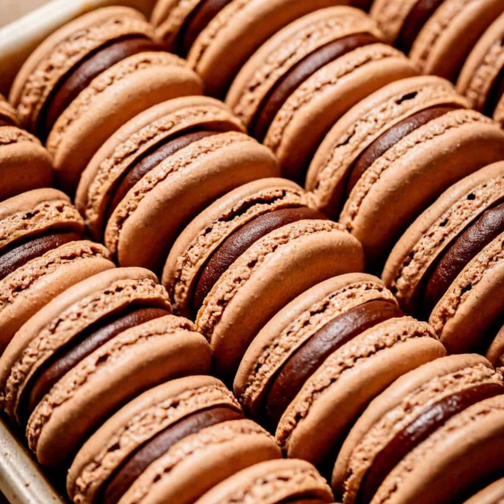

|  |
|---|
| ....::::**•°✾°•**::::.... |
| 100 g egg whites, 100 g granulated sugar, 100 g almond flour, 100 g powdered sugar, Pinch salt, Food coloring (optional) |
| ....::::**•°✾°•**::::.... |
| Preheat the oven to 300°F. Line two baking sheets with parchment paper. Set aside. Heat a small pot of water over medium-low heat until it steams. In the bowl of a stand mixer, combine egg whites and roughly 3 tablespoons of the granulated sugar. Place bowl over steaming pot, creating a double boiler. Whisk egg whites and sugar continuously until sugar melts completely and egg whites become white and frothy, about 1 minute. Remove from heat and place the bowl back onto the stand mixer. Fit stand mixer with whisk attachment and whisk on high speed while slowly adding in the remaining granulated sugar. Add the food coloring (if using). Continue to whisk for another 3-4 minutes, until stiff meringue peaks form. Congratulations, you just made a Swiss meringue! Next, sift together the almond flour, powdered sugar, and salt twice, then gently shake the mixture into the meringue bowl. Place the bowl back onto a stand mixer, still fitted with a whisk attachment. Turn the mixer to medium speed and whisk for 5 seconds (just enough to combine the almond flour mixture with the egg whites). Stop the mixer and use a large spatula to hand-mix the batter for the remainder of your mixing. You’ll want to gently fold the mixture with your spatula, scooping up the batter from the outside of the bowl and gently twisting it into the center in a circle-like manner. You’ll know to stop mixing when you can make a figure-eight out of the dripping batter without the batter breaking. If you cannot yet make a figure-eight, repeat the process if necessary, and try the figure-eight again. The best way to describe the perfect consistency is like slow moving lava. It should give, but only slightly, like in slow-motion. Once your batter is the correct consistency, scoop it into a large pastry bag fitted with a 1 inch tip. Pipe silver dollar-sized circles onto prepared baking sheets, keeping about 1.5 inches between each meringue. Bang baking sheet on counter two times to remove any air bubbles. Sprinkle tops with a little sea salt as a garnish. Let the macarons air dry for 15 to 30 minutes or until dry to the touch. Just pop them into the prepared oven for 13 minutes, turning around halfway through, then allow to cool completely before removing from baking sheets. While the macarons are cooling, make the filling. Combine all filling ingredients in a bowl and use an electric mixer to beat until fluffy and fully combined, about 2 minutes. Scoop mixture into a piping bag fitted with a 1/2 inch tip and set aside until ready to assemble the macarons. Once the macarons are completely cool to the touch, pipe the filling onto a macaron and sandwich with another macaron. Repeat with all macarons |